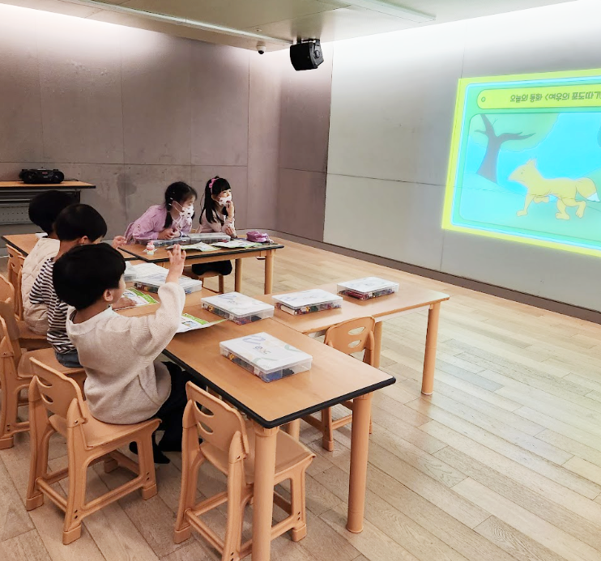
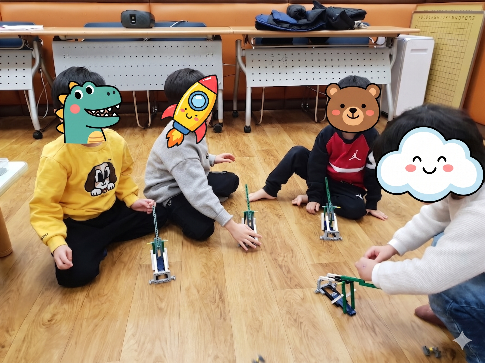
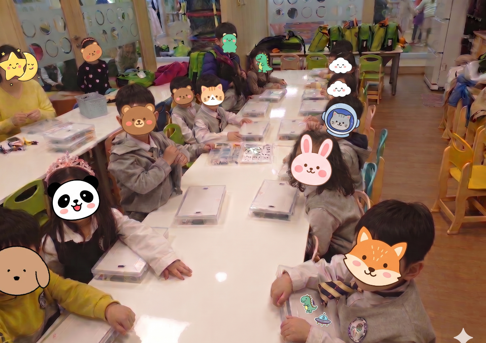

롤에듀 대표 프로그램
아이들의 발달 단계와 흥미에 맞춘 5가지 프리미엄 협력 놀이 교육을 만나보세요.
블록동화
Block Storybook 50~70분 과정
동화 속 세계를 블록으로 직접 만들며 상상력과 문제해결력을 기르는 창의 스토리텔링 놀이입니다.
동화 속으로 풍덩
세계의 명작동화를 듣고 상황을 경험하며, 인물들이 겪는 문제 상황을 블럭으로 해결할 목표를 인지합니다.

내가 만드는 움직이는 동화
단순한 블록 쌓기가 아닌, 기어와 축 등을 활용해 실제 움직이는 기계 장치를 구현하는 시간입니다. 동화 속 위기 상황을 해결할 아이디어를 2D 도면에서 찾아 3D 모형으로 발전시키는 기하학적 과정을 경험합니다.

성취감 쑥쑥, 책임감 있는 정리
완성된 블럭의 작동방법을 읽히고 과학을 경험하며 성취감이 극대화된 아이들은 부모님의 초대시간을 기다립니다. 부모님의 칭찬을 받기 위해 신나게 설명하며 부모님과 함께 정리까지 마무리하며 자기효용감도 성장합니다.

프로그램 기대 효과
창의적 문제해결력
스스로 생각하고 블록으로 구현하는 과정을 통해 문제 해결 능력이 향상됩니다.
공간 지각능력
2D의 도면과 동화를 3D 모형으로 재구성하며 입체적인 사고와 공간 지각력을 기릅니다.
의사소통 능력
부모님과 친구들에게 작동 방법을 논리적으로 설명하며 표현력과 자신감을 기릅니다.